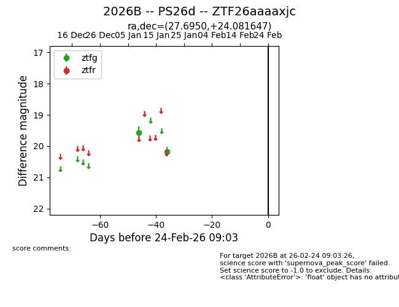
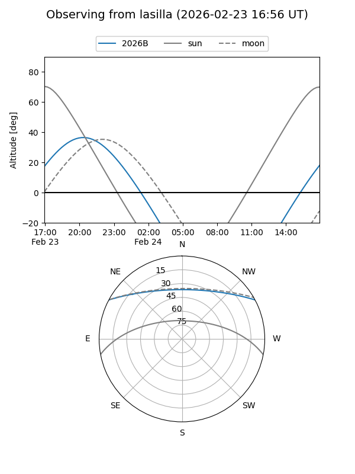
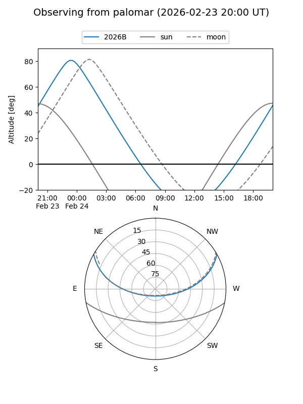

2026B
Target 2026B at 2026-01-21 05:26
Aliases and brokers:
FINK: link
Lasair: link
ALeRCE: link
TNS: link
YSE: link
alt names
ZTF26aaaaxjc (ztf,fink_ztf)
2026B (tns,yse)
PS26d (panstarrs)
Coordinates:
equatorial (ra, dec) = 27.6950,+24.08165
equatorial (HMS+DMS) = 01:50:46.79,+24:04:53.93
galactic (l, b) = (139.9115,-36.82576)
Flags:
Photometry:
last ztfg=20.18
2 ztfg detections
Lightcurve

Visibility


Additional plots